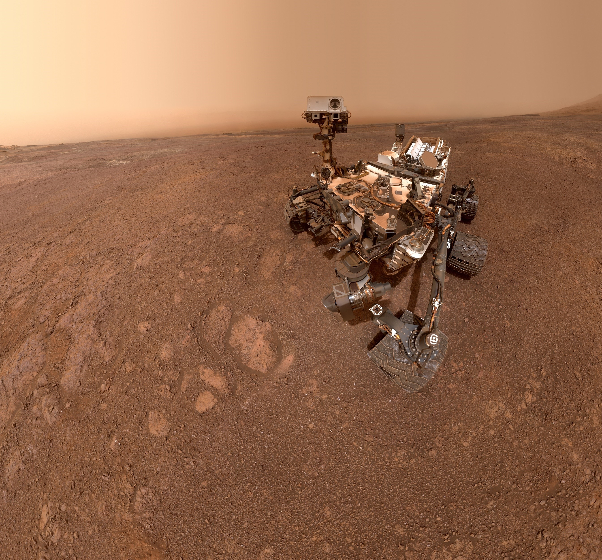
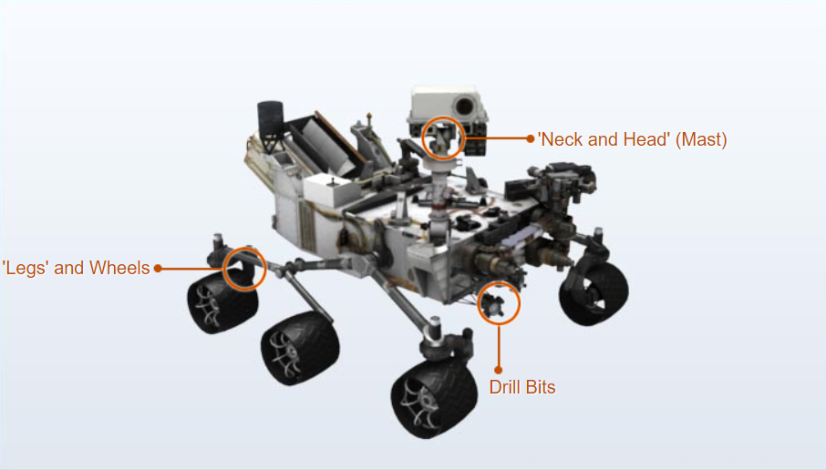

Curiosity
Curiosity set out to answer the question: Did Mars ever have the right environmental conditions to support small life forms called microbes? Early in its mission, Curiosity's scientific tools found chemical and mineral evidence of past habitable environments on Mars. It continues to explore the rock record from a time when Mars could have been home to microbial life.
Surveying Gale Crater
Curiosity explores Gale Crater and acquires rock, soil, and air samples for onboard analysis. The car-size rover is about as tall as a basketball player and uses a 7 foot-long arm to place tools close to rocks selected for study. Curiosity's large size allows it to carry an advanced kit of 10 science instruments. It has tools including 17 cameras, a laser to vaporize and study small pinpoint spots of rocks at a distance, and a drill to collect powdered rock samples. It hunts for special rocks that formed in water and/or have signs of organics.
Strong, Smart and Curious
Curiosity carries the biggest, most advanced instruments for scientific studies ever sent to the Martian surface. The history of Martian climate and geology is written in the chemistry and structure of the rocks and soil. Curiosity reads this record by analyzing powdered samples drilled from rocks. It also measures the chemical fingerprints present in different rocks and soils to determine their composition and history, especially their past interactions with water.
Coming in for a Landing
Mars Science Laboratory arrived at Mars through technological innovations that tested a completely new landing method. The spacecraft descended on a parachute, then during the final seconds before landing, the landing system fired rockets to allow it to hover while a tether lowered Curiosity to the surface. The rover landed on its wheels, the tether was cut, and the landing system flew off to crash-land a safe distance away.
Curiosity's Mobility
It is fit to climb over knee-high obstacles and travels about 100 feet (30 meters) per hour, depending on instrument activity, the terrain, and visibility its cameras have of the path ahead. The rover carries a radioisotope power system that generates electricity from the heat of plutonium's radioactive decay. This electrical power source has already far exceeded its required operating lifespan on Mars' surface of at least one full Martian year (687 Earth days). The generator provides greater mobility and flexibility in operating the rover regardless of season or sunlight. The steady flow of electrical power has enhanced the science payload capability and permitted consideration of landing sites at a greater range of latitudes than was possible on previous rovers.